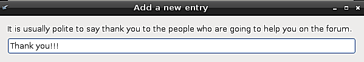
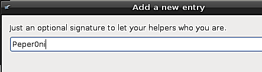
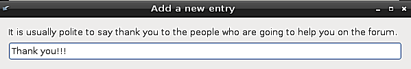
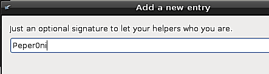

Share log on Forum - Rescapp - Documentation
Choose your language.
Share log on Forum - Rescapp - Documentation
-
Step 1Rescapp searchs for log files that have been generated by other Rescapp options.
-
Step 2You are prompted for the found files:Please choose a log file

-
Step 3Rescapp asks you some questions to improve the post

 



-
Step 4You are showed the log file.

-
Step 5You are asked to choose from several predefined forums (ubuntuforums, ...).